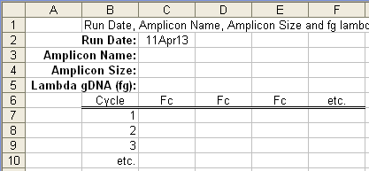

Note that this template has a limit of 182 Fc datasets and does not allow Ct and Ft values to be imported; well position and amplicon Tm are also not imported. Also note that sample profiles must be imported using the sample profile template.
To open an empty Excel template, go to the Import menu and select "Create a Calibration Profile Import Template". A file dialog box will appear asking for a name and a location for the resulting Excel file. Once a file has be created, Excel should automatically open to display the calibration profile import template:

Enter the Run date in C2, if the default date is not correct. Note that although the Run date and FC readings cannot be changed following data import, all of the other values can be manually edited within the program. Note also that if the amplicon size is left blank, the program will attempt to retrieve the amplicon size from the amplicon database, assuming it is open. If not, the amplicon size will be set to zero.
Each profile FC dataset is entered vertically starting at C7, along with the amplicon name, amplicon size and sample name in rows 3-5 respectively for each FC dataset. This should be the raw fluorescence readings (i.e. not background subtracted). Nevertheless, the program will accept background subtracted FC datasets if this is deemed necessary.
The default strandedness of the target is double stranded, and it is assumed that the standard is lambda gDNA.
SAVE THE FILE.
To initiate data import go to the Import menu and select "Manually Import Calibration Profiles".